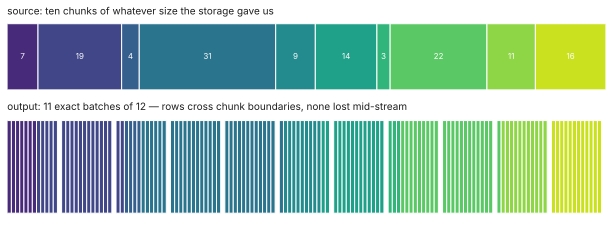
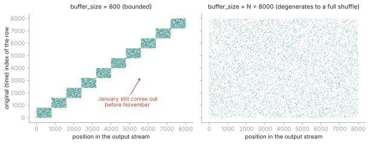

The CUSUM monitor and the streaming Pathfinder each got a deep-dive note (week 7, week 8), but the component everything else stands on never did. With #698 in final review, here is what the DataLoader actually promises, and the machinery that keeps those promises — because almost every line that survived two review rounds exists to defend one of them.
The contract
A model doing minibatch VI observes a fixed-shape pm.Data placeholder, so
the loader's first promise is that every batch has exactly
batch_size rows — no ragged tail batch, ever. The rows that cannot
fill a final batch are dropped for that pass (torch's drop_last). The second
promise is len(loader) == N, the dataset row count — deliberately not
the batch count torch returns — because N is what the likelihood needs
for its total_size rescaling. Everything else is downstream of these two.
Re-batching: any chunks in, exact batches out
A real out-of-core source does not yield tidy batches; it yields whatever the storage gives it — one Parquet row group at a time, a list of arrays, single rows from a generator. The re-batcher accepts blocks of any size, slices full batches out as soon as enough rows accumulate, and carries the remainder into the next block, so no row is lost mid-stream. The property tests are conservation laws: chunks of 7 through a batch size of 10 must reproduce every row exactly once, in order, whatever the chunk geometry.

drop_last).
What a bounded shuffle buffer can and cannot do
pm.Minibatch draws a uniformly random index over all N rows
every step, so its batches are i.i.d. by construction. A stream cannot afford that. The
compromise is a bounded buffer: fill at least buffer_size rows, shuffle,
emit batches, carry the remainder into the next fill; each epoch draws a fresh
permutation, reproducibly from a seed. That is an honest approximation with a sharp
limit: on time-ordered data a bounded buffer only block-shuffles — rows
from January still come out before rows from November, just scrambled locally. If your
data is sorted, the fix is a one-time shuffle on disk; the buffer then keeps the batches
well mixed cheaply. A buffer as large as the dataset degenerates, correctly, into a full
shuffle. This limitation is stated in the docstring rather than papered over, and the
distinction matters because a non-representative batch does not just slow convergence
— it biases the variational posterior.

shuffle_buffer. Left:
a bounded buffer (800 rows) only block-shuffles — no row moves further than the
buffer allows, so global order survives. Right: a buffer as large as
the dataset degenerates, correctly, into a full shuffle. The measured maximum
displacement on the left is 795 rows — just under the buffer size, exactly as the
docstring promises.
Auto-sizing without trusting the source
loader = DataLoader(
parquet_source("shards/"), # n_rows from Parquet metadata: "auto" is free
batch_size=4096,
sample_shape=(14,),
total_size="auto", # otherwise: one counting pass, with a warning
)
Getting N should be free when it can be: parquet_source reads
it from file metadata without scanning data. For an arbitrary source, "auto" does one
counting pass — and that is where the defensive machinery lives. A bare generator
is refused outright, since counting would consume the only pass the stream has. Subtler:
a factory that returns the same exhausted iterator each call would count rows
happily and then stream nothing, silently. So after counting, the loader probes the
source once more and demands a fresh, non-empty stream — a one-chunk cost that
turns "your fit trains on zero batches" into a construction-time error naming the fix.
The epoch-boundary check, and why it guards your posterior
total_size is not bookkeeping: the likelihood is scaled by
N / batch_size, so an N that is 10× too large makes the
data speak 10× louder than it should, and the posterior comes out too narrow. The
loader therefore audits it: a correct N satisfies
seen ≤ N < seen + batch_size after one full pass (the window accounts
for the dropped tail), with 10% slack for sources that are only approximately sized;
outside that, it warns once, naming both numbers. The subtle part is when to
check. A fit that stops exactly at the epoch boundary would never see the pass end, so
iteration runs one batch ahead — the check fires on the last batch, not after it.
That lookahead is also an honest cost: measured with weakref probes and
forced garbage collection, iteration holds two batches and the source chunks backing
them, not one. The module docstring says exactly that, because a memory claim on an
out-of-core tool is the one claim users will take literally.
What's next
The monitor and Pathfinder draft PRs go out next, and then the final stretch: two
tutorials and the final report. If there is a theme to this note, it is that a data
loader for inference is mostly not about moving bytes — it is about defending the
three numbers (batch_size, N, and their ratio) that the
statistics silently depend on.
Links. DataLoader PR #698 · Week 3: the DataLoader design · Week 7: the CUSUM monitor · Week 8: the streaming Pathfinder · GSoC project page · Mentors @fonnesbeck · @zaxtax